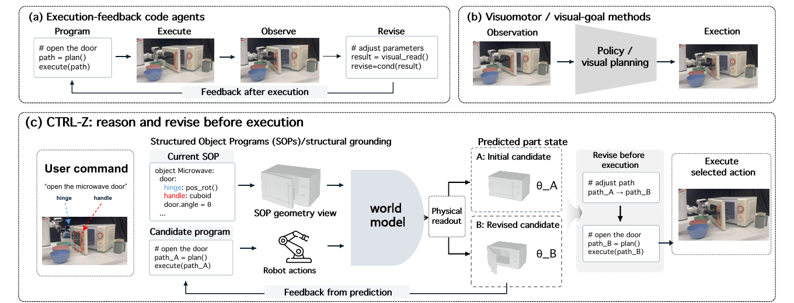
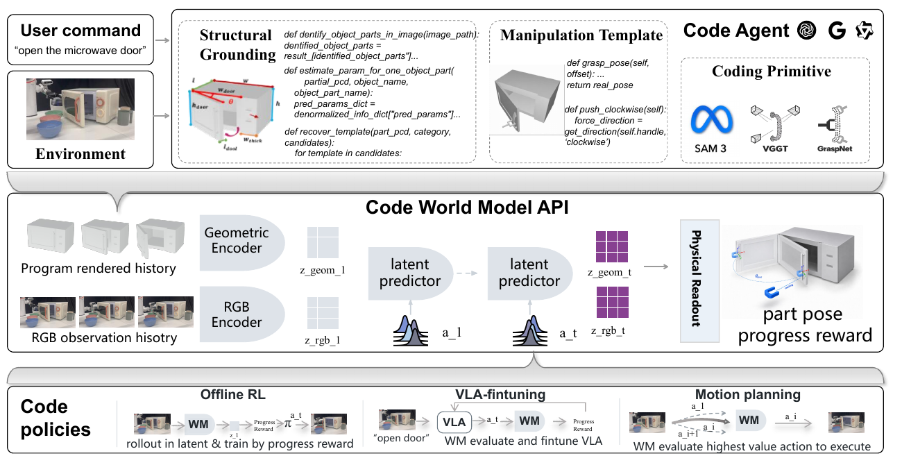
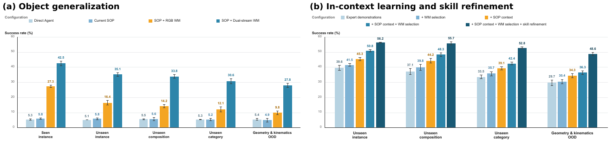
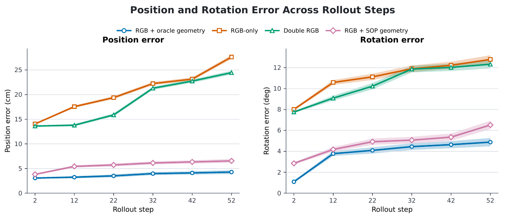
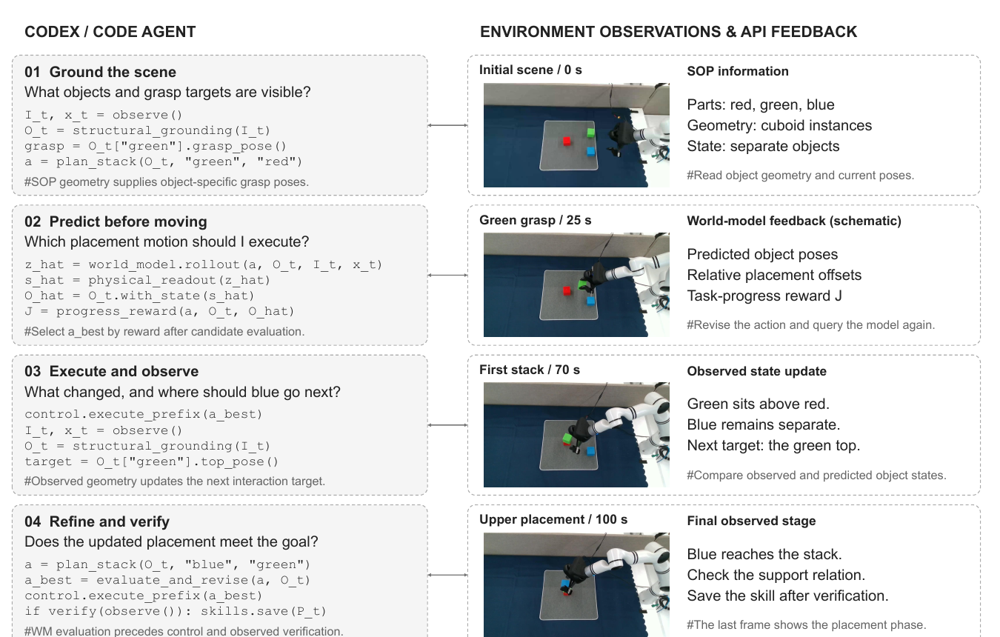
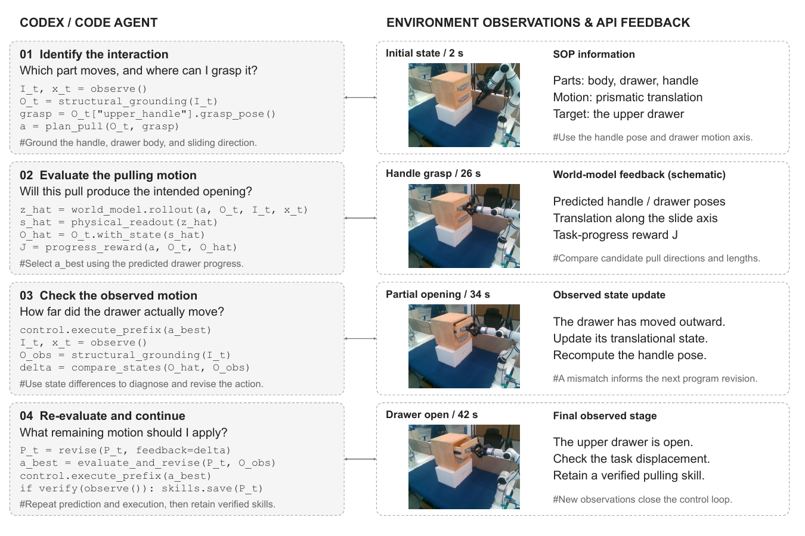

Generate
The code agent writes a candidate policy from the task instruction and a structured object description.
A code agent that can trial robot actions in imagination, inspect their predicted physical consequences, and revise its program before execution.
Why CTRL-Z?
Standard code agents can produce executable policies, but they do not know what those programs will do in the physical world.

The code agent writes a candidate policy from the task instruction and a structured object description.
An action-conditioned latent world model predicts future RGB appearance, geometry, and physical part state.
The agent reads the predicted state and rewrites the program when the imagined outcome does not satisfy the task.
Code-as-policy approaches translate language instructions into executable programs, enabling compositional task planning and reuse of robot skills. However, generating a valid program don’t establish whether a candidate action will produce the desired physical change. Action-conditioned world models offer a way to anticipate such changes, but their latent predictions are not directly expressed in the language of executable programs generated by code agent. To address these questions, we propose a closed-loop system in which a code agent can read, reason, make prediction and update object physical parameters based on those predictions, and generate actions accordingly. To make it readable for the agent, we build Structured Object Program, a compositional program describing object primitive geometry, physical parameters, interaction properties and rendering object programs into geometric views. For the prediction system, we propose a dual-stream world model that accepts RGB images and rendered geometric views as input while predicting future visual and geometric latent variables. Physical parameters regarding the dynamic parts of the object are decoded from these predicted latents and fed back to the agent, enabling it to understand how its current actions affect the object’s future properties. Experiments across manipulation tasks and object generalization settings show that our framework improves task success, cross-object generalization, and agent interaction efficiency.
Framework
The model separates visual appearance from physical structure, then reconnects both predictions through a state readout the code agent can understand.

Instantiate an SOP with semantic parts, geometry, kinematics, states, and affordances.
Condition the dual-stream world model on proposed actions and predict future RGB and geometry latents.
Decode dynamic part state and reward, then update the program before executing it.
Structured Object Programs
An SOP pairs semantic structure with geometric templates and manipulation functions. It gives the code agent a language for physical reasoning and gives the world model an explicit geometry stream.
class Microwave(SOP):
parts = [Body(), Door(), Handle()]
door = RevoluteJoint(
axis="vertical",
limits=self.door_limits
)
def open(self, grasp, angle):
grasp(self.handle)
rotate(self.door, angle)Illustrative excerpt — the final implementation link can be added after release.
Experiments
CTRL-Z is evaluated on articulated-object interaction, pick-and-place, precision operation, predictive evaluation, generalization, and real-robot transfer.
Task success
| Method | Open articulated objects | Pick and place | Precision operation |
|---|---|---|---|
| Diffusion Policy | 15.4 ± 1.7 | 24.6 ± 0.6 | 18.8 ± 1.1 |
| Online PPO | 23.9 ± 1.2 | 31.3 ± 0.8 | 25.7 ± 1.3 |
| Online TD-MPC2 | 25.5 ± 1.0 | 34.6 ± 0.6 | 29.1 ± 0.9 |
| DreamerV3 | 30.6 ± 1.1 | 39.0 ± 0.5 | 32.9 ± 1.4 |
| π0.5 | 38.2 ± 1.3 | 47.1 ± 0.9 | 39.4 ± 1.2 |
| Fast-WAM | 37.8 ± 0.8 | 48.4 ± 0.7 | 39.2 ± 1.3 |
| DreamZero | 34.1 ± 1.4 | 43.2 ± 1.0 | 33.5 ± 1.5 |
| CaP-Agent0 | 38.1 ± 0.9 | 47.5 ± 0.4 | 41.6 ± 0.8 |
| CTRL-Z · code-generated | 46.1 ± 1.5 | 53.4 ± 1.0 | 49.8 ± 1.4 |
| CTRL-Z · π0.5, no additional training | 50.6 ± 0.9 | 61.3 ± 0.5 | 54.2 ± 1.7 |
| CTRL-Z · π0.5 + WM-RL | 55.0 ± 0.4 | 65.8 ± 0.5 | 57.9 ± 1.1 |
Predictive evaluation
With GPT-5.6-Sol as the code backbone, direct execution succeeds in only 5.1% of trials. RGB-only prediction reaches 26.5%, while the full dual-stream model reaches 45.2%, close to the 46.4% oracle.
Interaction efficiency
The dual-stream configuration reduces the mean number of attempts from 29.8 with current SOP priors to 20.5, while the oracle requires 18.6 attempts.


Real robot
Each task uses 100 trials across 10 initial poses. CTRL-Z improves both block stacking and drawer opening without requiring online trial-and-error on the robot.


Takeaway
By turning imagined rollouts into interpretable physical feedback, the method closes the gap between a syntactically valid robot program and an action that is likely to work.